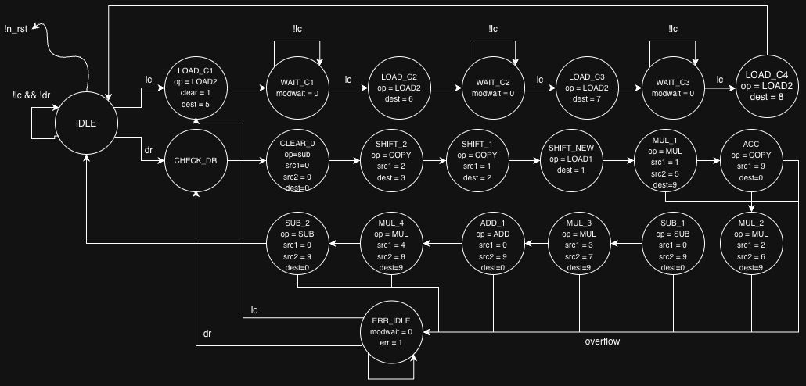
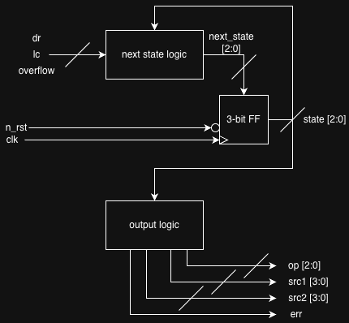
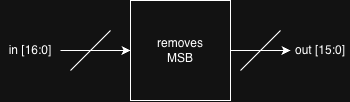

Selected original diagrams from my ECE337 UART and 4-point controller labs, documenting the RTL block structure, controller state transitions, and timer logic.
Lab 5 — UART
These diagrams show the receiver-control-unit (RCU) state transitions and RTL organization, along with the timer logic used by the UART design.
RCU RTL Diagram
RCU State Transition
Timer RTL Diagram
Lab 6 — 4-Point Controller
The controller flowchart and RTL diagrams capture the control states, datapath operation sequence, and magnitude block interface.
Controller Flowchart

Controller RTL Diagram

Magnitude RTL Diagram

ECE337 · Lab 07
Lab 7 — APB UART Peripheral
This lab extended the UART receiver into a memory-mapped System-on-Chip peripheral using the Advanced Peripheral Bus (APB). The subordinate interface exposes receiver data, status, and configuration through addressable registers, allowing a processor to read received bytes, check error conditions, and configure the UART bit period and data size.
Bus interface · RTL
APB Subordinate Interface
The apb_subordinate module translates APB transactions into the UART receiver's control and data signals. Its register map provides access to the received-data buffer, data-ready and error status, and writable configuration registers. It also generates the data-read handshake so the receiver can clear or advance its buffered data after the processor consumes a byte. Invalid addresses and writes to read-only registers are reported through the APB error response.
ECE337 · Lab 08
Lab 8 — AHB FIR Filter Accelerator
Lab 8 replaced the simpler APB connection with the pipelined Advanced High-performance Bus (AHB) and connected the bus interface to the FIR filter developed in Lab 6. The work required handling overlapping address and data phases, register-mapped accelerator control, byte-lane alignment, registered read data, and read-after-write hazards.
Bus interface · RTL
AHB Subordinate Interface
The ahb_subordinate module acts as the processor-facing register bank for the FIR accelerator. It decodes AHB addresses and read/write controls to expose filter status and results, accept new samples, and store the four filter coefficients. It also validates transfer size and access permissions, aligns data to the correct byte lanes, registers read responses, and handles read-after-write hazards so a back-to-back read observes the most recently written value.
Control logic · FSM
Coefficient Loader State Machine
The coefficient_loader is a finite-state machine that sequences the transfer of the four stored FIR coefficients from the AHB register interface into the filter. It tracks which coefficient is being selected, asserts the load control at the appropriate time, and clears or completes the loading sequence. Separating this sequencing logic from the bus interface keeps coefficient loading deterministic and lets the FIR datapath focus on filtering samples.
ECE337 · Cooperative Design Lab
Systolic Array — Matrix Multiply Accelerator
The Cooperative Design Lab brought the individual bus and datapath concepts together in a larger SoC accelerator for fully connected neural-network inference. The accelerator uses an AHB subordinate interface to communicate with the processor, buffers to stage weights and input vectors, a controller to coordinate data movement, and a systolic array to perform parallel matrix multiplication. The following diagrams document the system architecture and the compute datapath.
System architecture
Top-Level Accelerator Architecture
This diagram shows how the processor-facing AHB interface connects to the controller and data buffers, and how those blocks feed the systolic array and activation stage. The top level coordinates weight loading, input delivery, inference control, status reporting, and output retrieval. Keeping the bus-facing logic separate from the compute datapath makes the accelerator easier to integrate and verify.
Parallel datapath
8×8 Systolic Array, Bias Adder & Activation
The 8×8 systolic array is the accelerator's parallel compute fabric. Processing elements pass data between neighboring cells while performing multiply-accumulate operations, allowing matrix products to be built across the array over successive clock cycles. The output path adds the configured bias and applies the selected activation function before results are made available to the system.
Processing element
Floating-Point MAC Datapath
Each multiply-accumulate (MAC) processing element combines an incoming activation with a stored weight, multiplies the operands, and accumulates the product with the partial sum. Repeating this operation across the array forms the dot products needed for matrix multiplication. This diagram focuses on the arithmetic datapath inside the systolic processing elements.
Output processing
Activation Module
The activation module transforms the computed network outputs according to the mode selected by the processor. The design supports ReLU, binary, identity, and leaky-ReLU behavior. Keeping activation separate from the MAC array allows the same matrix-multiplication datapath to support different output functions without changing the core multiply-accumulate structure.
RTL Diagram
Scroll to zoom · Drag to pan · Use Fit to return to the full diagram